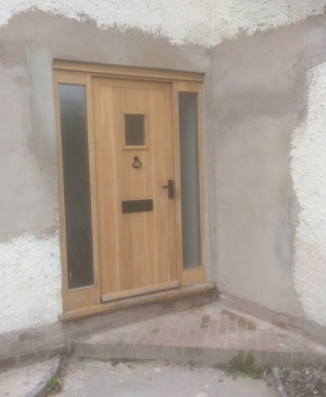

J&J Plasterers · Cheshire
A closer look at the work.
Browse photographs from John’s plastering and rendering projects, read what customers have said, and check whether he covers your area.
The gallery
Photos from past jobs.
These photographs are from J&J Plasterers’ original project gallery.



Project photos supplied by J&J Plasterers.
Customer comments
Kind words about John.
“John was totally reliable, arriving when he said he would. I was impressed with the results too. Everywhere else stayed remarkably clean throughout — and his fixed price remained a fixed price!”
“John did a first-class job plastering my house. Great service, competitive prices and really friendly.”
“John has plastered most of our house we renovated, and just got him back to do our new kitchen. He did a fantastic job, always on time and for a great price.”
Customer comments reproduced from the J&J Plasterers testimonials page.
Where John works
Cheshire and Greater Manchester.
Free call-out quotes are available in the areas listed. Outside of these towns? John says he may be able to travel further—get in touch to ask.
Ask John about your area- Handforth
- Wilmslow
- Poynton
- Macclesfield
- Prestbury
- Bramhall
- Cheadle
- Stockport
- Altrincham
- Didsbury
- Alderley Edge
- Stretford
- Urmston
- Sale
- Disley
- Manchester
- Irlam
- Salford
Have a project in mind?
Ask John for a free quote.
Share a few details about the work, or get in touch directly.